About
DadLAN Australia was established in 2023, bringing together Dads with a common interest in technology, computing, games, and family.
Local Community Engagement
The DadLAN Events initiative operates via regional chapters, offering in-person gatherings. These social events aim to combat isolation, foster connections, and establish a friendly Third Space for fathers.
Attendees gather regularly to engage in socializing, gaming, and reminiscing about the 'LAN Party' era, among other activities.
Social Network
DadLAN Online program is delivered through digital spaces and provides an uplifting and positive social network. We focus on holistic well-being, community, and family.
The social network provides people an extended community of friends, access to resident experts, and connections to professional networks.
Directors
William Parry
 - javagoogles

William is a dad of two in Sydney and has 20 years of technology experience. He has worked in the non-profit space since 2018 with OpenLaw NZ and is passionate about mental welfare in the community. He started DadLAN after seeing the success of his wife's mother's group and noticing that there was not a similar level of support for Dads.
David Pirogov
- oznyet
David lives in Melbourne with his wife and twin boys. After the birth of his twins, David found that the support networks and social connections for fathers were hard to find, create, and maintain. After many conversations on the topic, it became apparent that this was a nationwide challenge for many men. Determined to make a difference, DadLAN was founded as a way to make a positive impact in men's lives.
Shawn O'Neill
- sanswork
Shawn is a dad of one with over 25 years experience as a programmer and technology executive. He found DadLAN while looking for new social groups after moving back to Sydney from a regional area and fell in love with the family positive environment and focus on mental health